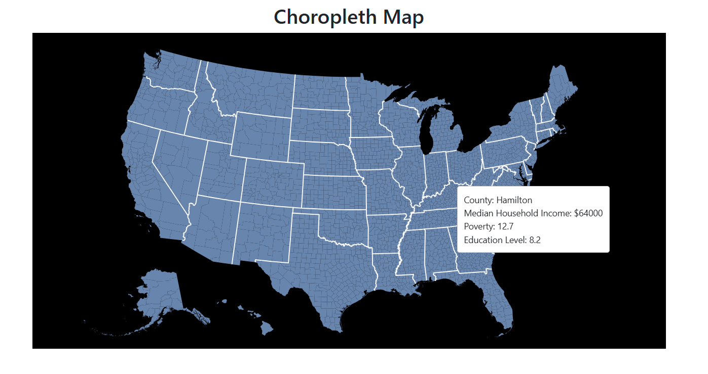
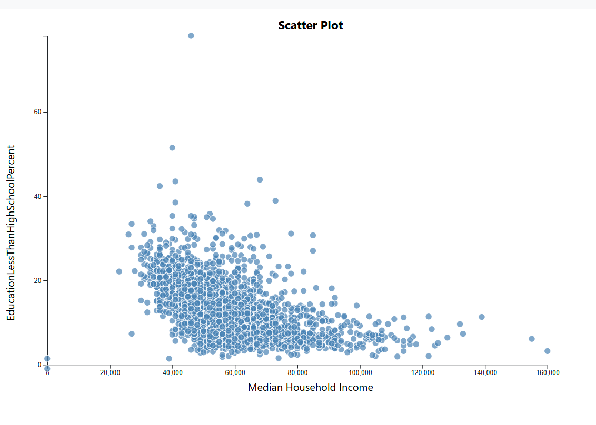
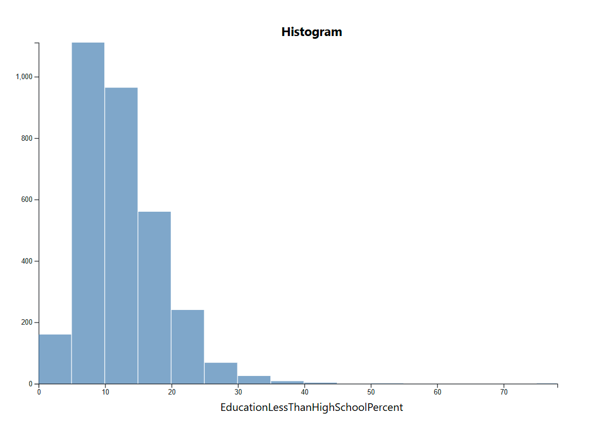
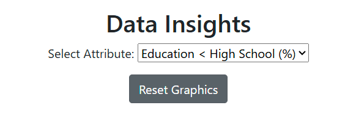

Project Links
Source Code hosted on GitHubDemonstration
Live Application
Use of AI and Collaboration
AI tools including ChatGPT and Copilot were used to help debug the choropleth map code, and help improve the UI/UX. AI was also utilized to help develop the documentation as the doucmentation is presented in an HTML format for my portfolio website
Overview
This web application provides interactive visualizations to explore socioeconomic and health data across U.S. counties. The visualizations include:
- Choropleth Map: Displays geographic data using color gradients. 
- Scatterplot: Shows relationships between two variables. 
- Histogram: Displays data distribution. 
The motivation behind this application is to explore how income influences other socioeconomic factors such as health, employment, and education. By providing an interactive visualization, users can uncover relationships between income levels and various demographic indicators.
Data Sources
The datasets used in this application include:
- USDA Atlas of Rural and Small-Town America (Socioeconomic Data).
- US Heart and Stroke Atlas (Health and Healthcare Data).
Technology Stack
- D3.js: Data visualization library.
- JavaScript: Handles interactivity.
- HTML & CSS: Provides structure and styling.
Process
- Libraries used: D3.js, JavaScript, HTML, CSS.
- Additional Frameworks: Bootstrap
- Code structure: The application is divided into modules for data loading, visualization, and interactivity.
- Deployment: Hosted on Vercel, with source code available on GitHub.
Features
1. Choropleth Map
The map displays counties color-coded based on selected attributes, such as income levels or healthcare access.
2. Scatterplot
Users can compare two attributes, such as median income vs. obesity rates, by selecting them from dropdown menus.
3. Histogram
Shows the frequency distribution of selected socioeconomic attributes.
Attribute Selection
Users can select what attribute they would like to compare the economic data against to see the impact it has on other aspects of life.
Challenges
There was difficulty in implementing the choropleth map and significnat amount of time was spent debugging the code to fully understand where the data for the graph was being saved to be properly called within the JavaScript code. This issue took up a significant portion of development time.
There was also difficulty in having the graphs properly update the titles/text, despire the actual data changing as expected
Future Work
- Expanding the dataset to include more recent statistics.
- Enhancing UI/UX with additional filtering and customization options.
- Enhancing UI/UX with improved layout for user friendliness
- Address bugs/iisues with updating graphs producing extra white space
- Adjust graphs for improved representation via color choice